Spring decor goes wrong in a predictable way. The room fills with pastel objects, and nothing feels any lighter.
The fix is weight, not color. Take out one heavy thing for every light thing you bring in, and let a few big bunches of flowers do the talking.
These 35 ideas cover living rooms, trays and mantels, bedrooms, kitchens, entries and tables. Read the five rules first, because they work in every room.
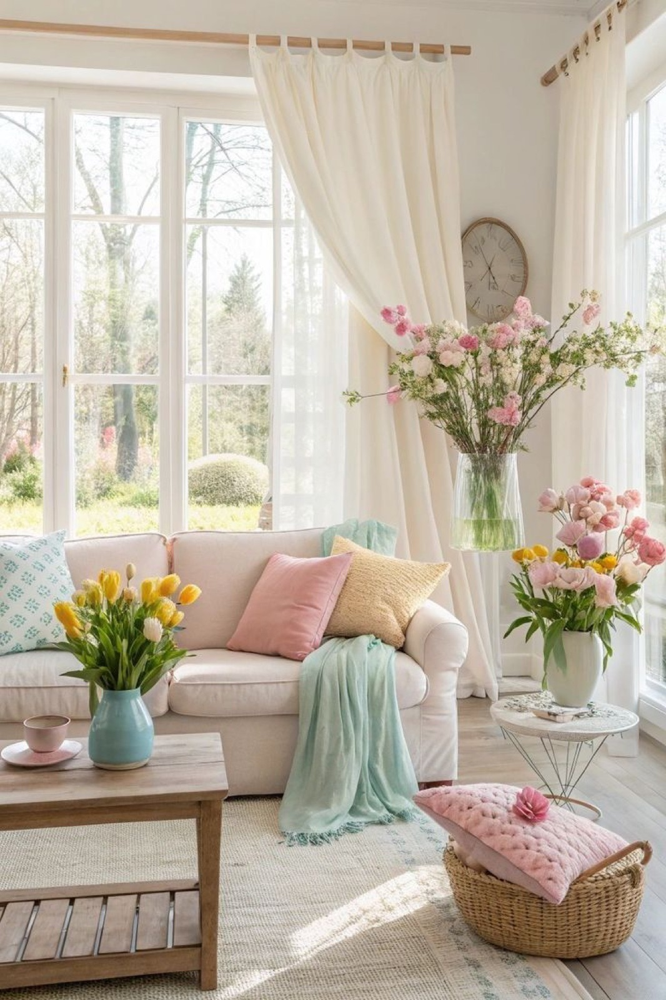
Five Rules for a Spring Refresh That Stays Light
- Name your palette before you shop. Two colors plus a neutral, such as blush and sage over cream, read as planned. Five pastels read as a party store.
- Swap weight for light. Linen and cotton in place of wool, sheers in place of heavy panels, a flat-weave rug in place of a shag. The room lightens without new furniture.
- Give the flowers one big vase. A single generous bunch beats five small ones. Use odd numbers of stems and recut them every two days.
- Put one winter piece away for every spring piece that comes in. Editing keeps a refresh from turning into clutter.
- Add scent and green, not figurines. A reed diffuser, a few olive branches and a plant do more for a room than a shelf of bunnies.
Start With Light, Rugs and Pillows
1. Hang Sheers Before You Buy a Single Flower
Light is the first spring decor, and it costs almost nothing. Swap heavy panels for sheers and the room brightens before one flower arrives.
Hang the rod 4 to 6 inches above the window frame and let the panels brush the floor. The long sheers here stretch a tall window even taller.
Pair a tall branch arrangement on the floor with a low bunch of yellow tulips on the coffee table. Two heights give the room a skyline.
Keep the palette to what is already in the room: pink, butter yellow and mint, each repeated once or twice.

2. Let the Rug Carry the Color
A patterned rug can do all the color work. This pink-and-cream floral sets the palette while the sofa and walls stay neutral.
Size it so the front legs of the sofa sit on the rug, about 8 by 10 feet in most living rooms. A rug that floats in the middle shrinks the room.
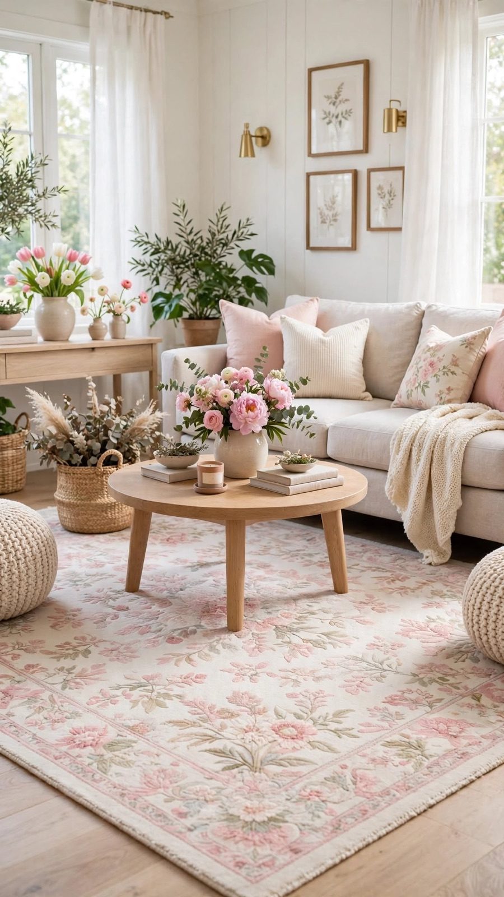
3. Use Pastels in Small Doses
Want pastels without a nursery look? Stop at three pillows, one throw and one bouquet. The pink, mint and cream pillows on this sofa do exactly that.
One bunny is plenty. Pair it with something real, like the basket of eggs or a small plant, so it looks styled instead of themed.
Make the bouquet on the coffee table tall enough to see from the doorway and leave the rest of the table bare.
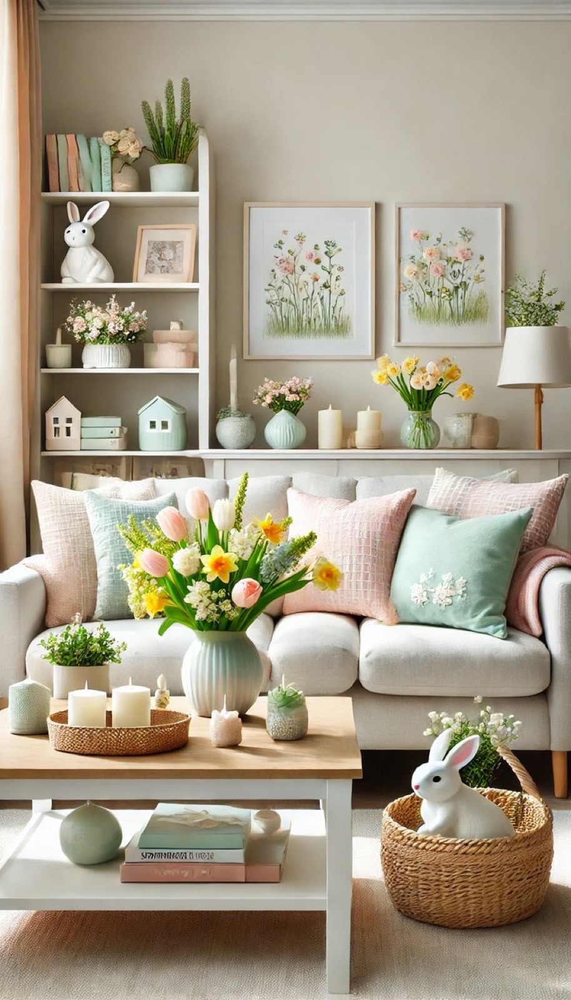
4. Buy Lavender for Staying Power
Lavender is the cheapest long-lasting color for spring, because dried bunches keep their purple for months. Put a bunch in a clear vase and echo it in one pillow.
Round cushions soften a square sofa. Choose two sizes, like the pink and mint pair here, so they look collected, not matched.
A pink throw over the arm completes the corner with three colors: lavender, pink and mint.
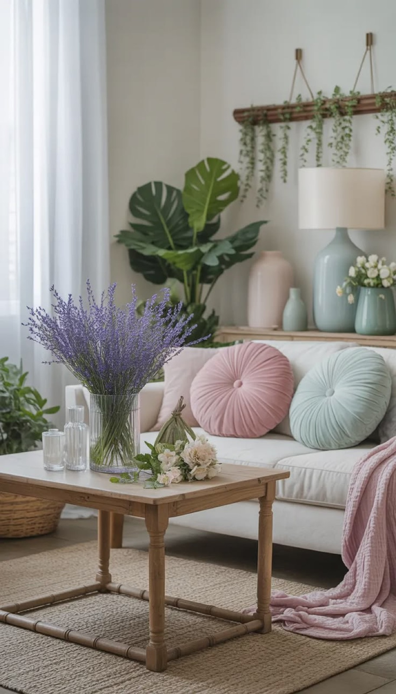
5. Hang Four Prints as One Piece
A grid of botanical prints is spring decor you can leave up all year. Use four matching frames, hung about 2 inches apart, and the wall reads as one piece.
A woven pendant nearby, as in this room, ties the wood furniture and the paper together.
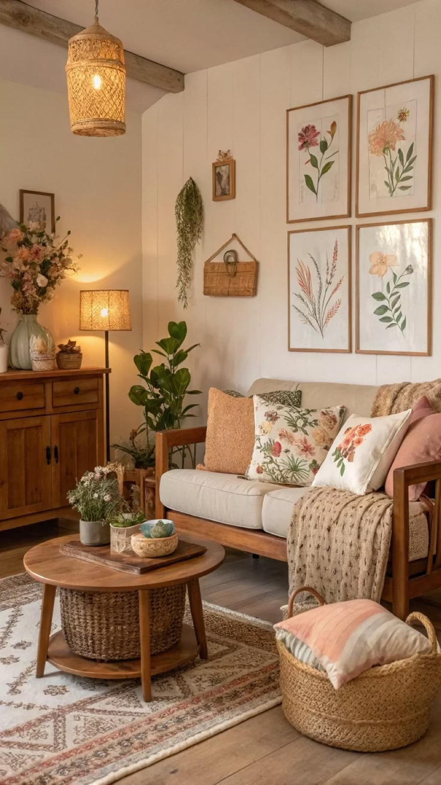
Coffee Table Trays That Hold the Flowers
6. Corral Small Vases in a Crate
A crate or tray gathers small vases so the table looks styled, not scattered. A wooden crate holds the mint vases and the white pitcher of tulips here.
Work in three heights: a tall vase, a medium pitcher and a short candle. Leave the rest of the table clear so a mug has somewhere to land.
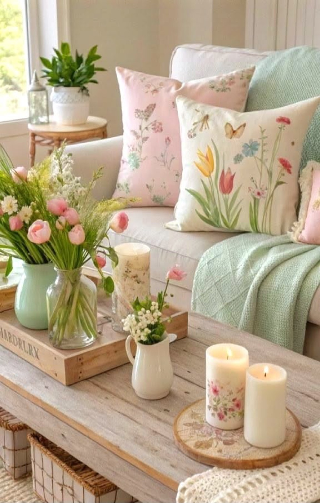
7. Start With Tulips
Tulips are the easiest spring flower to arrange because they keep growing after you cut them. Trim an inch off the stems and stand them in cool water.
They also lean toward the light, so give the vase a quarter turn each day. This coral bunch fans out from a ribbed cream vase.
Put one small story under a glass cloche: a few eggs and a figure on a book, as on this woven tray.
Keep the candle at the edge of the tray and a folded napkin beside it so the whole thing looks lived in.
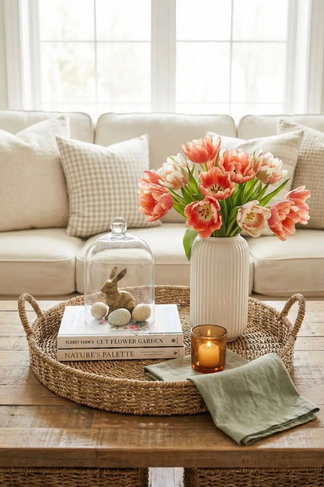
8. Build a Loose Bouquet in Order
A loose bouquet looks wild in the good way when every stem is a different type. Tulips, daffodils, ranunculus and blossom branches share one vase here.
Place the branches first to set the shape, then the tulips and daffodils, then the small stems last.
Keep the eggs and candle at the edge of the tray so the flowers stay the center.
Lift the vase out of the tray to refill it. Water spilled on woven rattan leaves a stain.
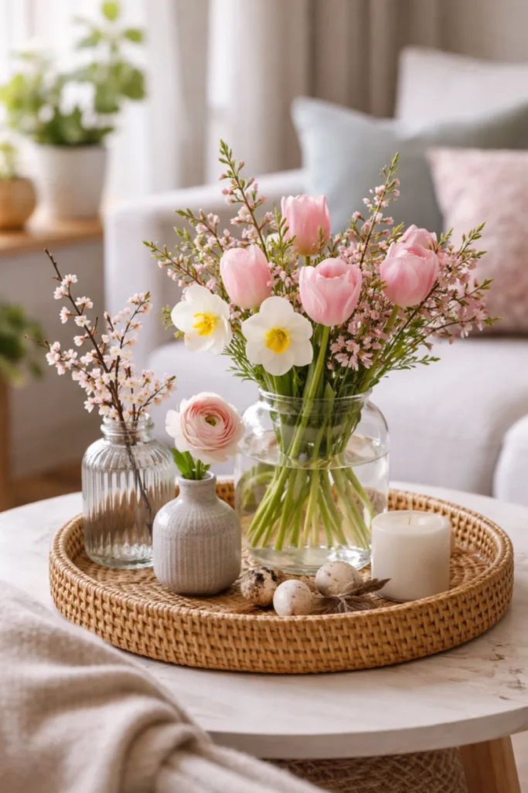
9. Add Scent to the Tray
Spring decor can be smelled as well as seen. A candle and a reed diffuser on one tray add a layer the eye cannot, as beside these peach roses.
Choose a light linen or citrus scent. Heavy florals fight with real flowers.
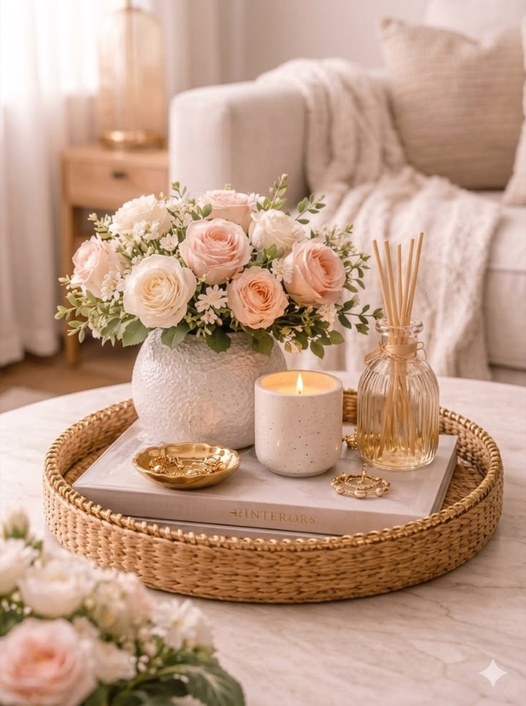
10. Stay in One Color Family
One color family keeps a tray calm. Green ceramics in two slightly different shades, a white flower and a stack of books are all it takes here.
Vary the shades on purpose. A soft sage pitcher beside a deeper green candle reads as layered, while an exact match reads as a set.
Stack two books under the vase for height, as this tray does, and turn the covers outward.
Pick up the white of the flowers in a small dish so the tray feels finished.
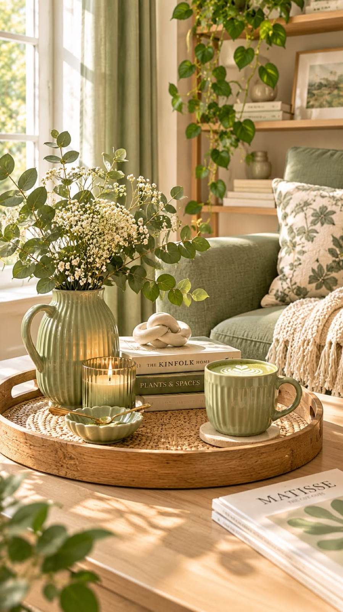
11. Put the Tray on a Mirror Wall
Dried lavender lasts all season, and a few stems in a bud vase need no water. A white donut vase holds the bunch here, with a smaller bottle and two candles beside it.
Group everything on one round wooden tray so you can lift it as a unit when you need the surface.
A round mirror behind the tray doubles the glow and the greenery. Hang it with the center near eye level, around 57 to 60 inches from the floor.
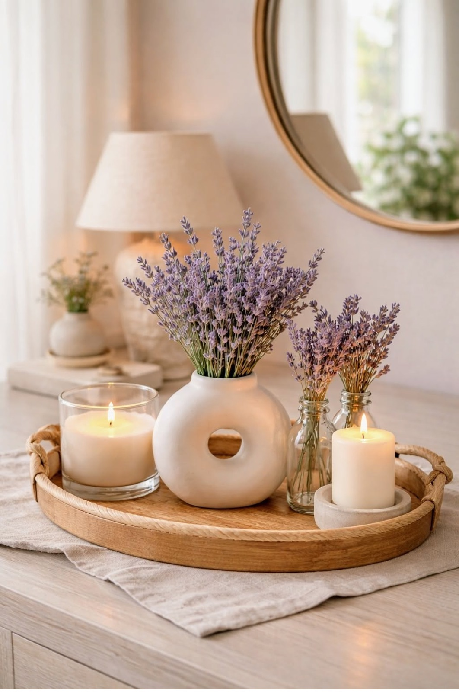
Vases, Mantels and Console Tops
12. Use a Ginger Jar With Orange Blooms
A blue-and-white ginger jar is the classic spring vase, and orange blooms give it a sharp contrast. Here the jar sits on a wood tray.
On a glass table, a tray adds warmth and keeps the glass free of fingerprints and rings.
Keep the rest of the table to books and one gold bowl. Blue, white, orange and gold is already four colors.
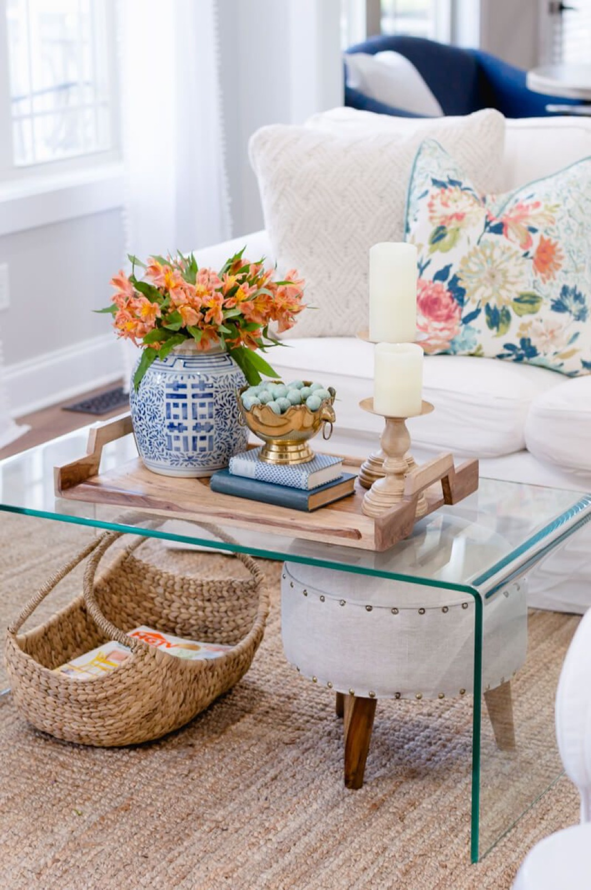
13. Let Colored Glass Be the Bouquet
Colored glass brings spring color without a single bloom. Group four vases of different heights, like this row of amber, cobalt, pink and green, and fill only one with flowers.
White hydrangeas in the tallest vase are enough. The glass is already the show.
Keep the surroundings neutral. A gold lamp and one abstract canvas let the colors stand out here.
Place the set where daylight can reach it. Colored glass looks flat at night and glows beside a window.
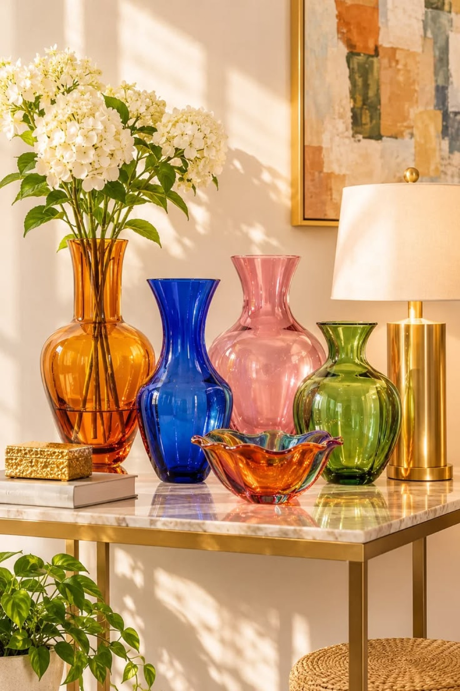
14. Fill Porcelain With Baby's Breath
Baby's breath is the cheapest filler flower there is, and it looks expensive in blue-and-white porcelain. Add a few blue stems, as here, for a traditional look.
Cut the stems so the flowers rise about one and a half times the height of the vase. Shorter looks stubby and taller looks top-heavy.
Two small porcelain spheres at the base finish the group on this marble mantel.
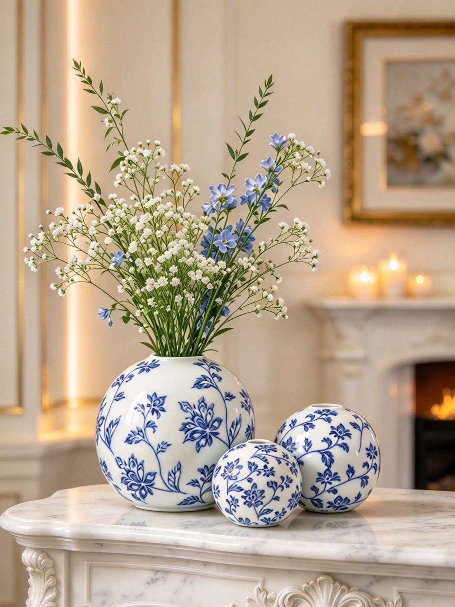
15. Pick Dried Stems You Will Not Throw Out
Dried stems are the spring decor you will still like in two months. Mix soft dried grass with olive branches in a matte vase, as here.
Set the vase on two stacked books with a candle beside it, and dust the stems with a hair dryer on low every few weeks.
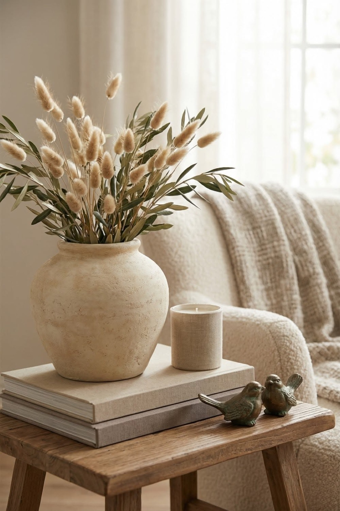
16. Turn Baskets Into Vases
A basket can be a vase if there is a jar inside it. Slip a glass jar into each basket and the water stays put, as on this white mantel.
Group three baskets in different sizes and add a small stack of bowls on one side for balance.
Cut the daisies short enough that they sit just above the rim. The woven handles look best when the flowers do not hide them.
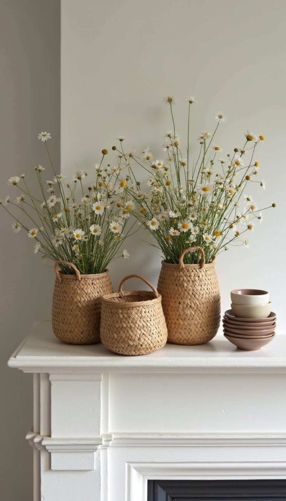
Bedrooms in Green, Yellow and Floral
17. Layer Three Greens in a Sage Bedroom
Sage is the easiest spring bedroom color because it works in bright and dim rooms alike. Keep the wall soft and layer the bedding in three greens, from pale to deep.
This bed adds a chunky knit throw across the foot. It stays comfortable through April if it is cotton. Wool feels hot by then.
Brass sconces on each side of the bed free up the nightstands.
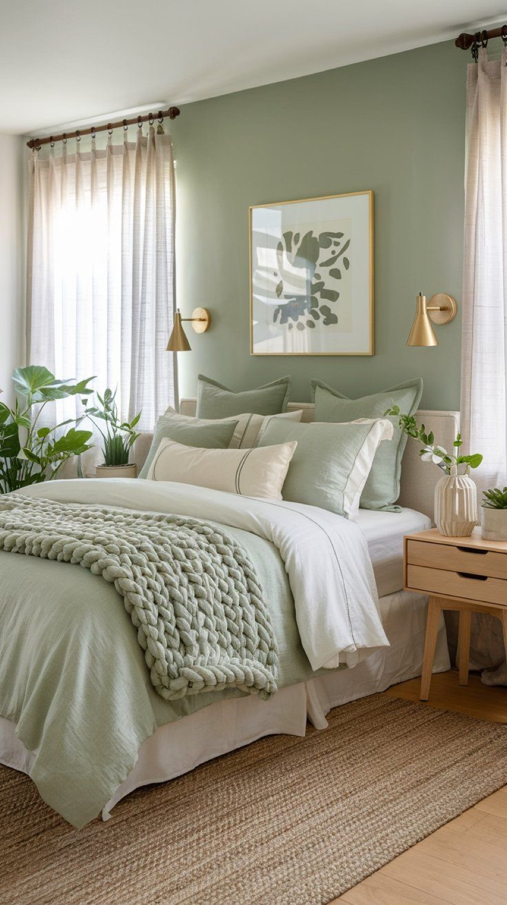
18. Use Butter Yellow in One Place
Yellow is a bold spring bedroom color, and a pale buttery one is easy to live with. Use it on the bedding, as here, or on one wall, not both.
Keep the rest cream and wood. This room uses a light wood bed and a round jute rug so the yellow does the only talking.
Linen bedding gets softer with every wash, so buy a set you will use all season, not a single throw.
Test a paint sample beside the bed at three times of day. Yellow shifts from lemon to mustard with the light.
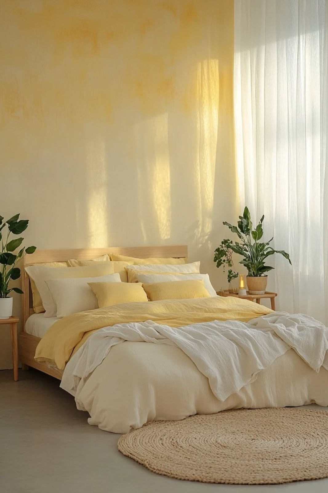
19. Hang Lace on a Thin Rod
A lace curtain keeps the light and still gives privacy, which a blind cannot do. On a thin rod it flutters when the window is open.
Use a rod just wide enough for the window. A heavy rod makes lace look like a stage prop.
A jar of daisies on the nightstand, like this one beside a lamp, takes about a minute to set up.
Change the water every day on small vases, because a small amount turns cloudy quickly.
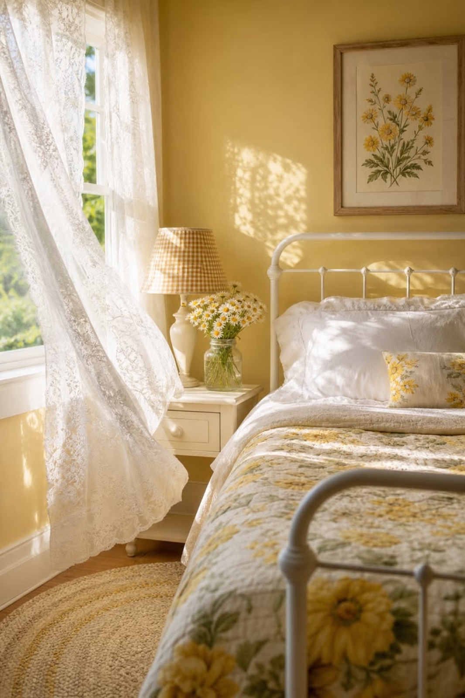
20. Pull the Throw Color From the Quilt
A floral quilt is spring in one piece. Pull one color from the pattern for the throw, as the olive throw here picks up the leaves.
Frame a few small prints in matching frames to carry the pattern up the wall, and keep the rest of the bedding plain.
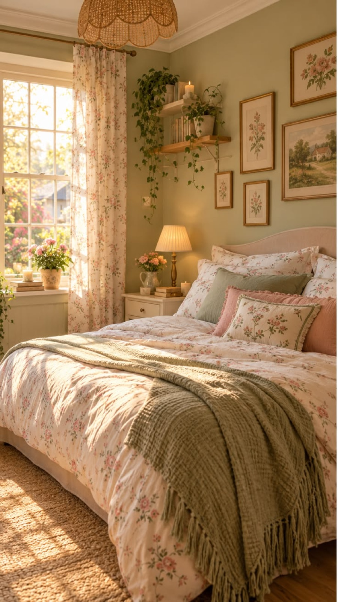
21. Plan the Gallery Wall on the Floor
A gallery wall makes a headboard wall feel finished. Use frames in white and light wood and mix floral prints with simple line art.
Lay the frames on the floor first, trace each one onto paper and tape the paper to the wall. Move the paper, not the nail holes.
A blush chunky knit throw adds a soft layer, and a gingham pillow keeps the florals from taking over.
Keep a bunch of tulips on the nightstand and replace them each week.
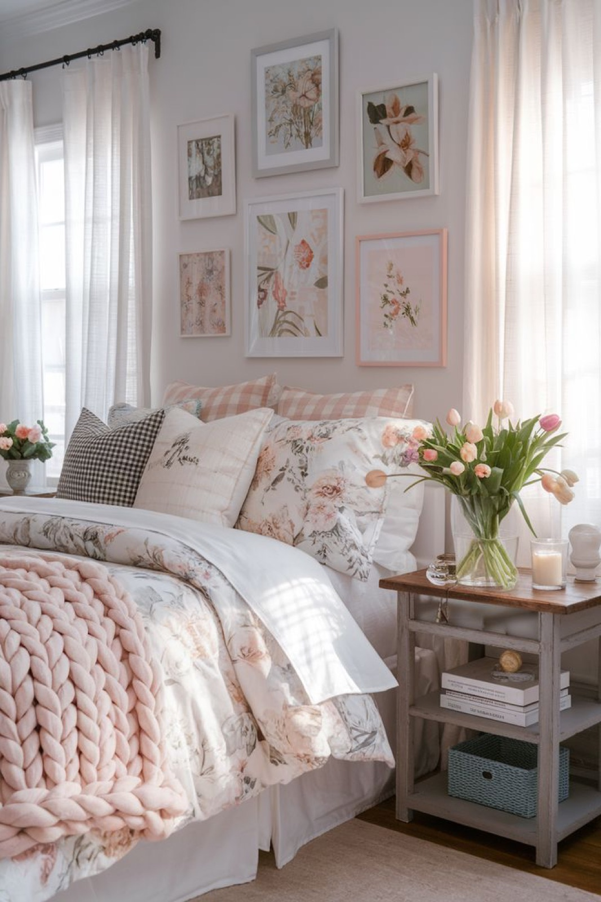
22. Choose a Small-Scale Floral on Cream
A small-scale floral reads as a pattern from across the room and a texture up close. Pick a cream ground, not white, as on this duvet of red wildflowers.
Add one solid pillow in sage and a jute rug underneath. The pattern is the star, so keep everything else plain.
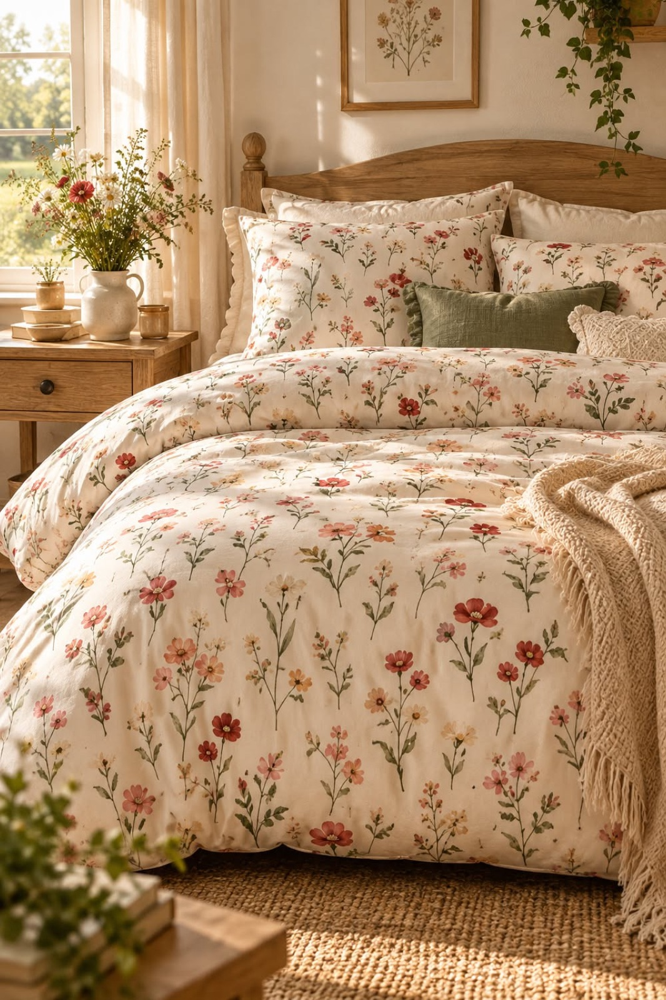
Kitchens and Bathrooms
23. Stand Plates on Open Shelves
A few patterned plates make open shelves look styled, like the two pink floral platters behind white bowls here.
Stand them on edge with a plate stand or against the shelf lip so they cannot slide.
Keep daily dishes within easy reach and the pretty ones up high. Anything you touch every day gets greasy, and anything near the stove gets greasier.
Tuck a small vase of baby's breath at one end of the shelf for height.
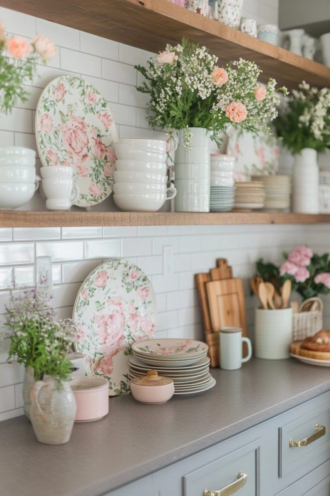
24. Swap the Dish Towels
Towels are the cheapest spring swap. Hang pastel stripes on a brass rail, as here, and put a bowl of lemons on the counter.
Wash new towels before you use them. The first wash removes the finish and makes them absorbent.
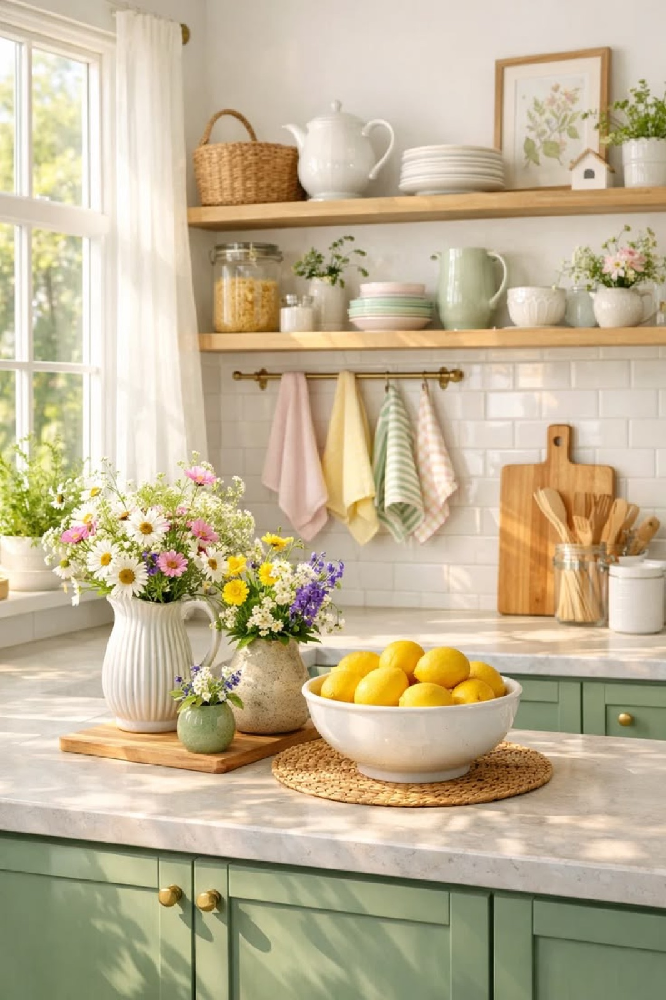
25. Give the Island One Arrangement
An island needs one flower arrangement and nothing else. Use a clear vase, like this one of tulips and daffodils, so you can see when the water drops.
Fold two towels over the edge for color and keep fruit in a bowl nearby. Keep the flowers away from the cutting board.
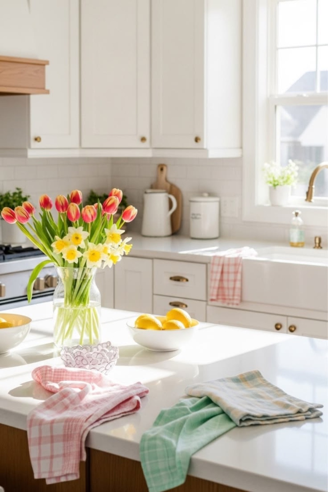
26. Refresh the Bathroom in Ten Minutes
A bathroom can take a spring refresh in ten minutes. Swap the towels for pastels and put a bunch of tulips by the sink.
Rolled towels in a basket under the vanity stay dry and ready for guests.
Steam shortens the life of cut flowers, so expect a bunch to last a few days and replace it when the petals drop.

27. Style the Counter on a Tray
A tray defines a styled counter. A bouquet, a candle and a bowl of fruit together mean everything else can stay off the surface.
Pick fruit you will eat. A styled counter should still be a working one.
Choose a tray large enough that the bowl and candle each have an inch of room around them.
Slide the tray aside when you cook, so the flowers and candle stay away from splatter and heat.
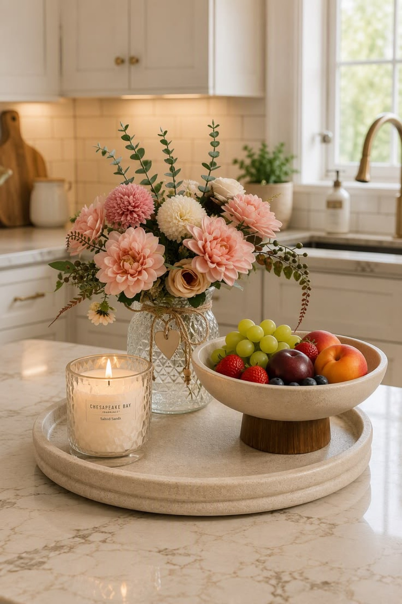
Entryways and Front Doors
28. Build the Console in Three Layers
A console near the door sets the mood for the rest of the house. Add three framed prints above, a lamp and a bouquet, and stop there.
Keep baskets underneath for shoes and throws, as on this white console. They hide what you would rather not see at the door.
Hang the prints in a row, about 2 inches apart, with the group centered at eye level.
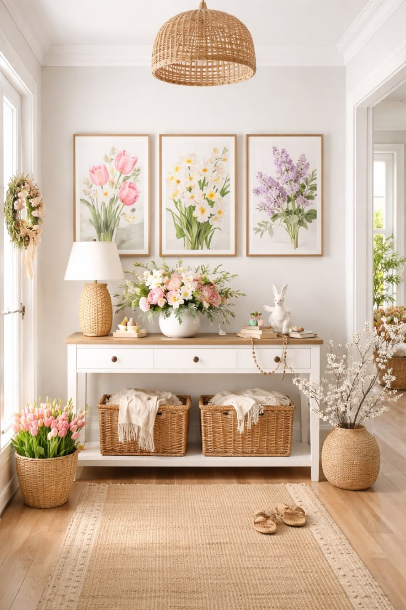
29. Mount the Hooks at 60 Inches
A hook rail makes an entry work. Mount four hooks about 60 inches from the floor and hang a bag and a scarf, as here.
A low wire basket under the bench holds shoes and slippers, so the floor stays clear.

30. Put Branches by the Door
Branches give height without bulk. Cut a few cherry or forsythia stems and stand them in a tall vase by the door.
Hang a round mirror beside a window so it bounces daylight down the hall.
Bare cherry and forsythia branches open in a week or two in a warm room, so the arrangement changes while you watch.
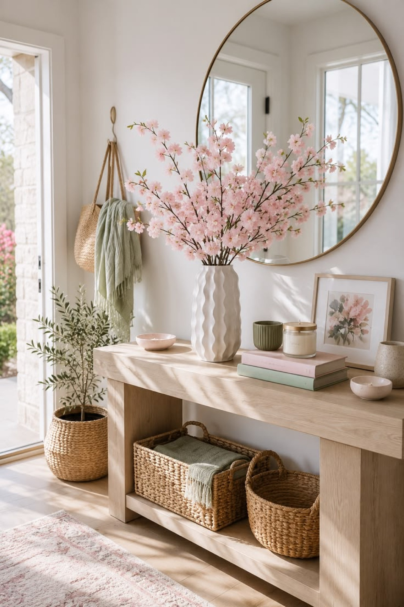
31. Hang the Wreath on a Dark Door
A dark door makes a pastel wreath stand out. Choose a grapevine base with eucalyptus and soft pink flowers, as on this deep green door.
Hang it from an over-the-door hook so no nails mark the paint.
Faux flowers fade in sun and rain, so hang the wreath under cover or bring it in when storms come.
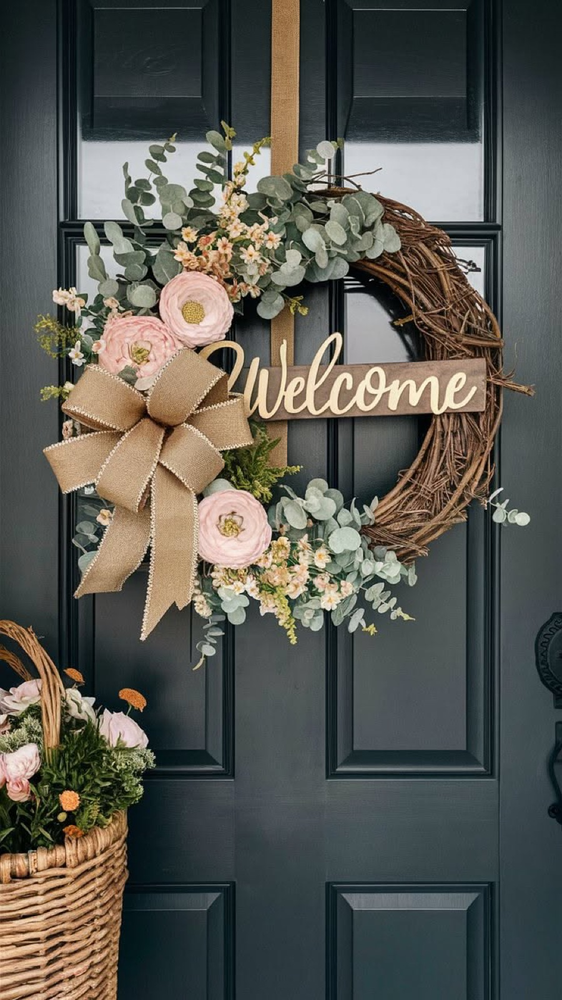
Dining Tables and Lighting
32. Run Greenery Down the Center
A greenery runner makes a table look set without effort. Lay olive branches down the center and add candles at different heights, as here.
Keep the runner narrow, about 12 inches, so guests can reach across, and keep candle flames a hand's width from the leaves.
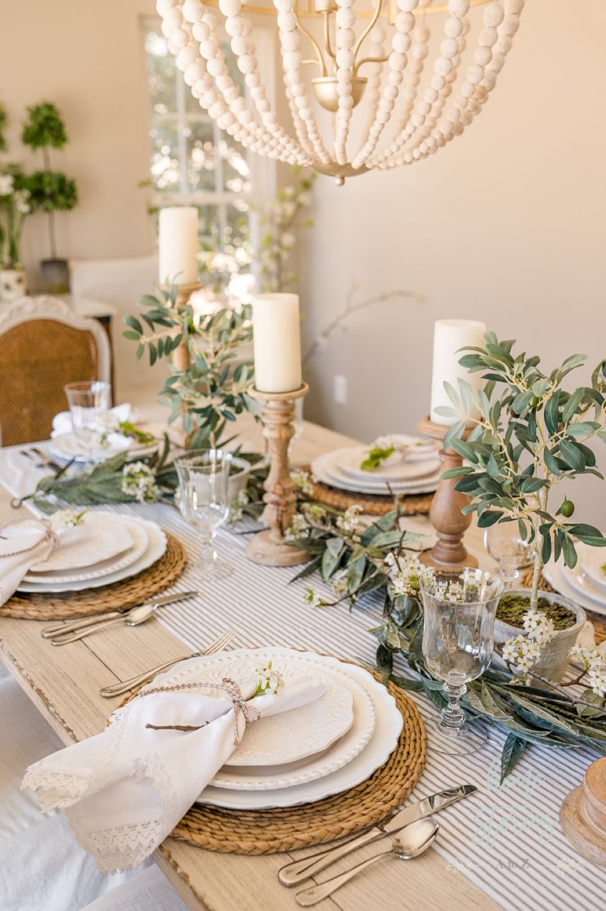
33. Use Black Candlesticks Against Pastels
Black candlesticks keep a pastel table from feeling sweet. Use tall tapers and a white vase, as here.
Rattan placemats add texture, and linen napkins look relaxed.
Raise the vase on a wooden stand and the flowers clear the candlesticks.
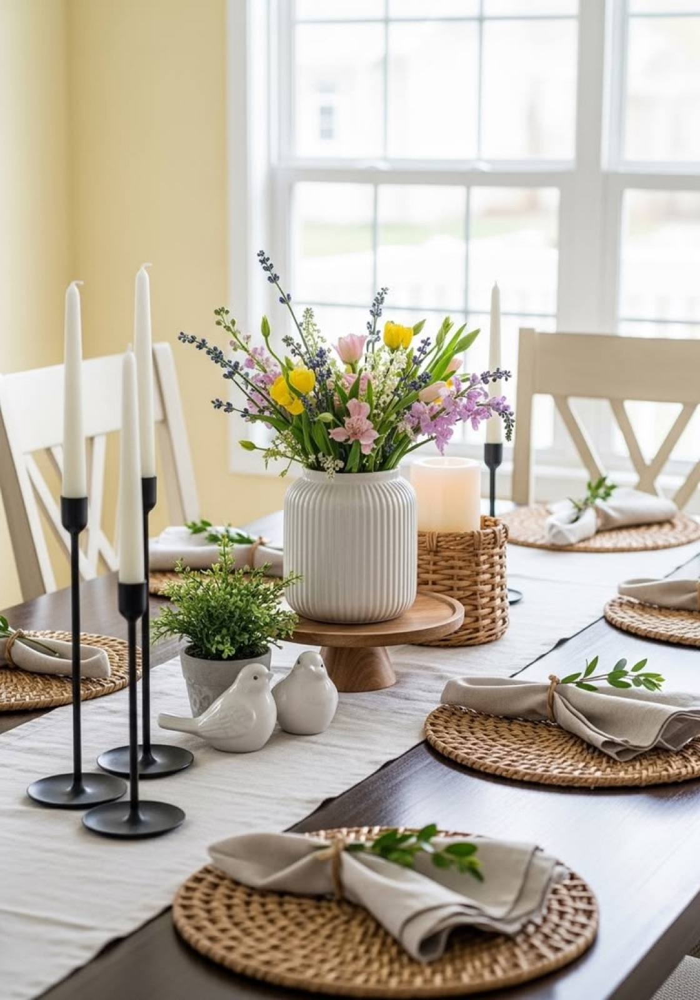
34. Keep the Round Table Low
A round table is friendlier for conversation. Use a floral tablecloth and keep the centerpiece low enough to see across.
Pink glassware and brass candlesticks make an afternoon table feel dressy.
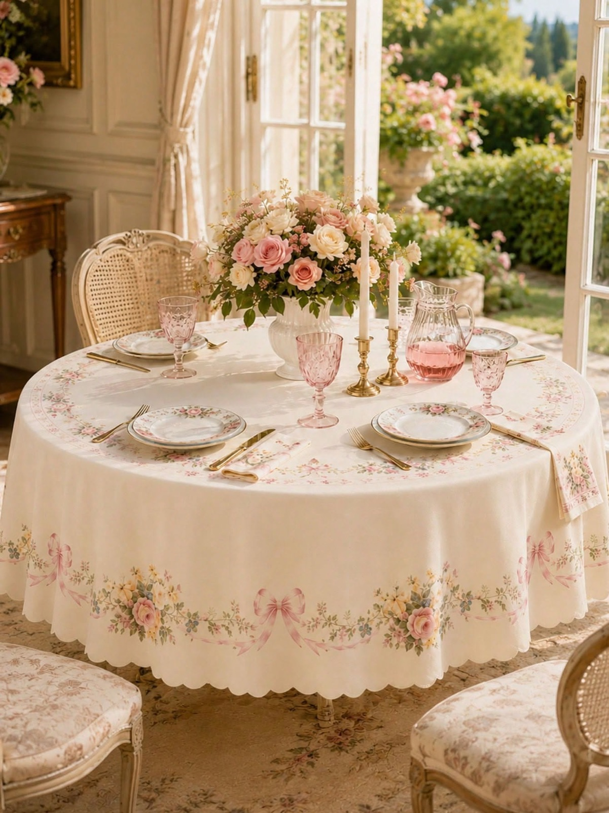
35. Hang a Woven Pendant
A woven pendant adds spring warmth without a single flower.
Hang it 30 to 34 inches above the tabletop so it lights the table without blocking faces.
Pair it with a small vase of olive stems on a woven mat, as in this room.
Choose a warm bulb around 2700K so the rattan glows instead of looking gray.
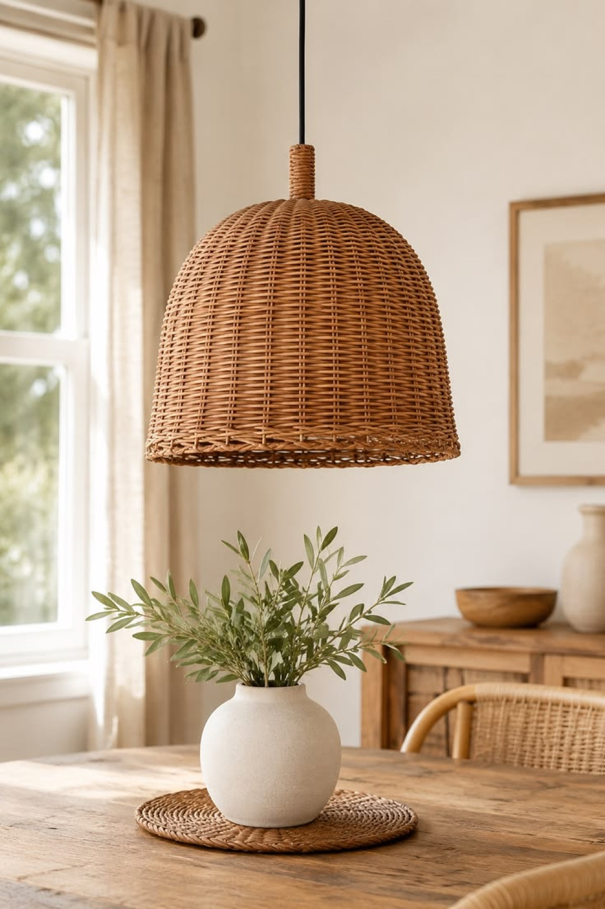
Common Mistakes (and Fixes)
- Mistake: buying every pastel at once. Fix: choose two colors and a neutral, then repeat each in three places.
- Mistake: cut flowers in cloudy water. Fix: change the water every two days and trim an inch off the stems.
- Mistake: winter wool left on the sofa. Fix: switch to cotton or linen throws once the days warm up.
- Mistake: a scent that fights the flowers. Fix: choose a light linen or citrus candle or diffuser beside real blooms.
- Mistake: a shelf crowded with seasonal figurines. Fix: keep one or two and let flowers and greenery carry the rest.
Where to Start
A refresh can be small. Start by taking down the heaviest drapes, put one big bunch of flowers where the morning light lands, and swap a wool throw for cotton.
If the room still feels like winter, change the rug next. Everything else can wait.